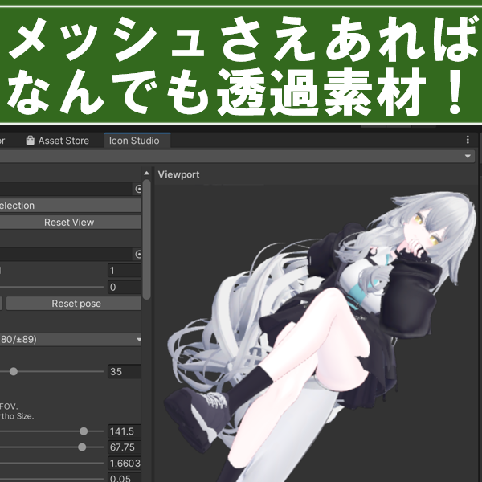
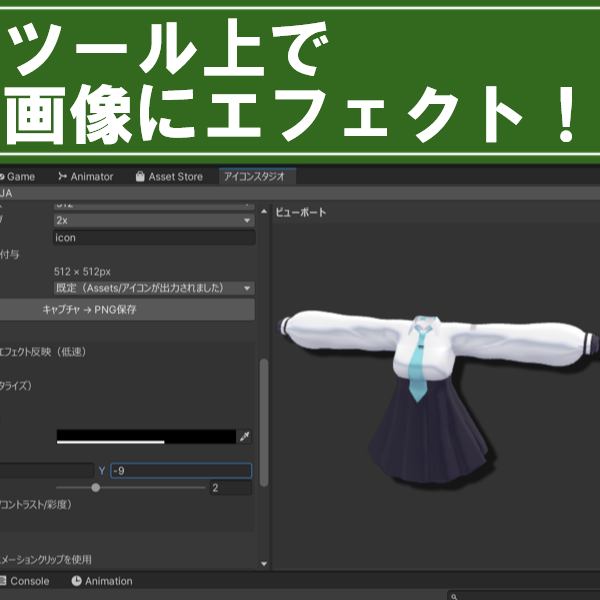
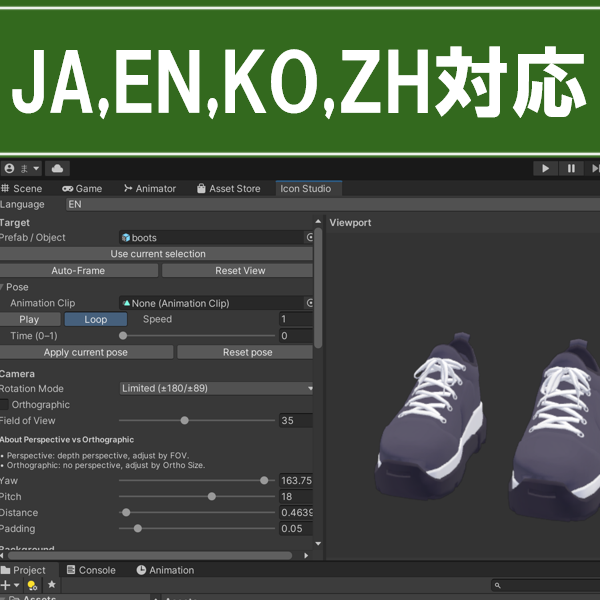
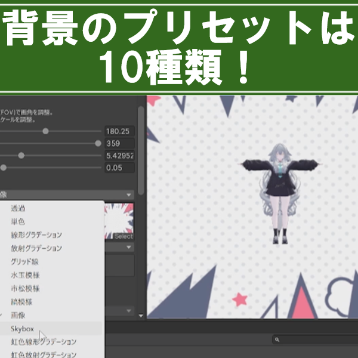
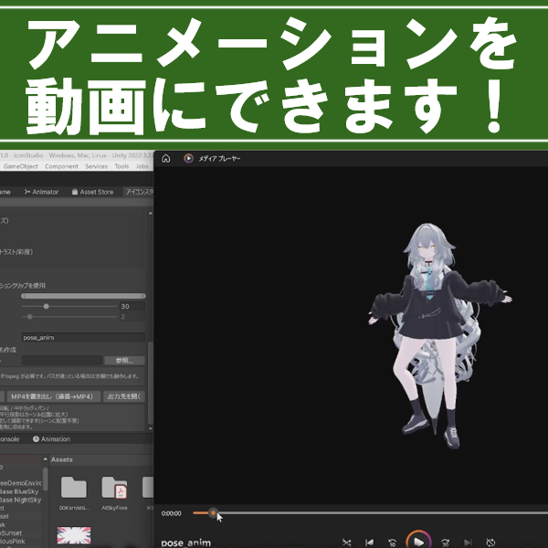
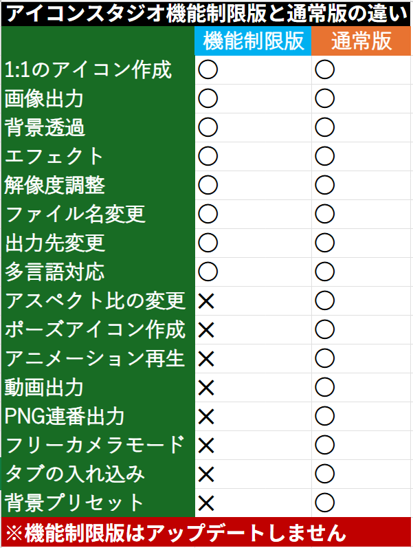
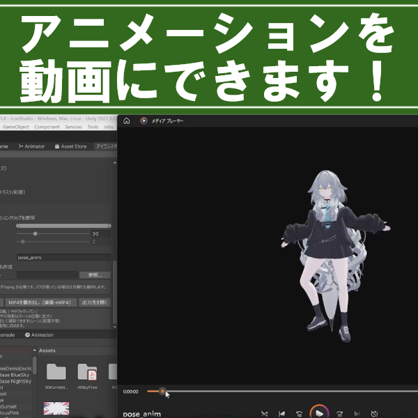
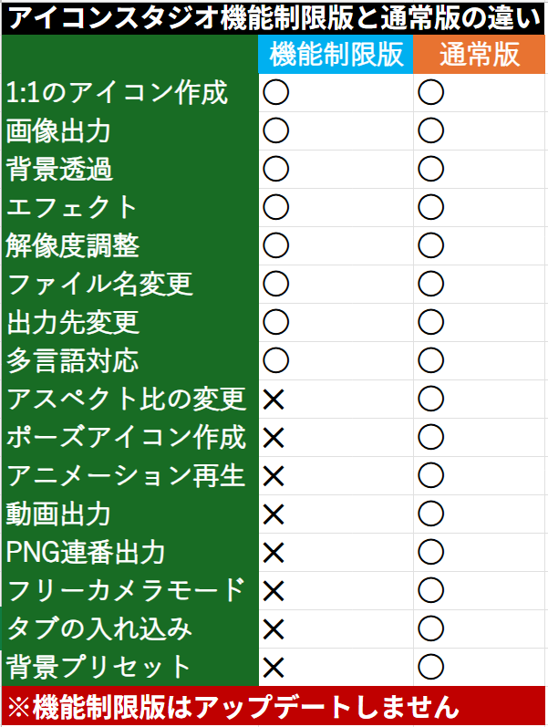
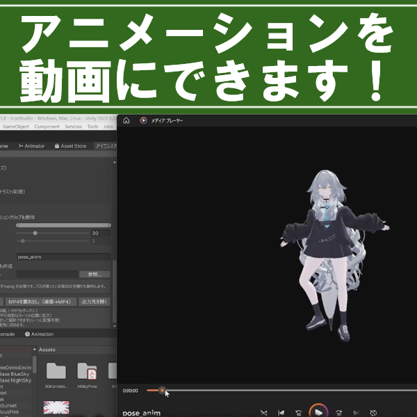
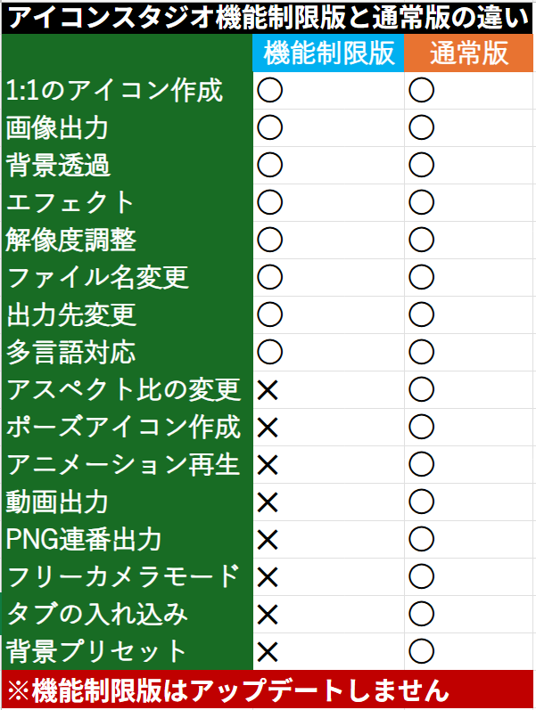

概要
「アイコンスタジオ」は、VRChatのExpression Menu用アイコン作成を起点に、高機能なレンダリング機能を搭載したエディタ拡張ツールです。
最大16Kの超高解像度レンダリングから、FFmpeg連携によるMP4動画出力まで対応。エフェクト（縁取り、色ずれ等）や精密なカメラ制御により、誰でも簡単にプロクオリティの素材を制作できます。
主な機能
- 静止画・動画出力: アイコン（PNG）だけでなく、紹介用の動画（MP4）も作成可能。
- 超高解像度対応: 最大16384px（16K）までのレンダリングに対応。
- 多彩なエフェクト: 縁取り、色ずれ、加算BlendShapeなど、表現を彩る豊富な設定。
- 精密カメラ制御: Unity同様の操作感に加え、X,Y,Z軸の精密なロール・回転制御が可能。
ギャラリー




 





導入に必要なもの / 動作環境
- ✔ Unity 2022.3.22f1 (VRChat推奨バージョン)
- ✔ VRChat SDK 3.0 (導入済み環境で開発・動作確認済み)
- ✔ FFmpeg (MP4動画出力に必須)
注意点
※VRChatにアップロードするアイコンは512px以下である必要があります（ツール側でデフォルト設定済み）。
※MP4は背景透過に対応していません。透過素材が必要な場合はグリーンバック等での出力を推奨します。